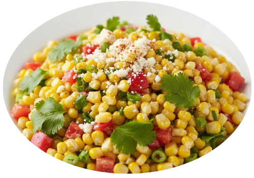
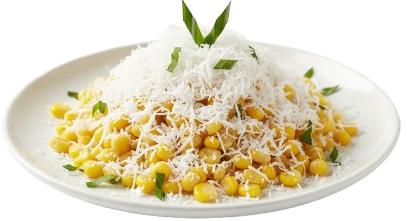

Olahan Jagung

Salad Jagung
segar dan creamy
♡

Bubur Jagung
manis dan lembut
♡
Sup Jagung
hangat dan gurih
♡
Jagung Enoki Pedas
pedas gurih
♡
Pudding Jagung
manis dan lembut
♡
Jagung Susu Keju
manis gurih
♡

Jagung Kelapa Parut
manis gurih tradisional
♡